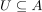
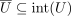
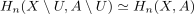

excision of homology
1. Definition
Given a pair  and
and

such that
then there exist an evident inclusion
induces an isomorphism of homology

Given a pair and

such that
then there exist an evident inclusion
induces an isomorphism of homology
